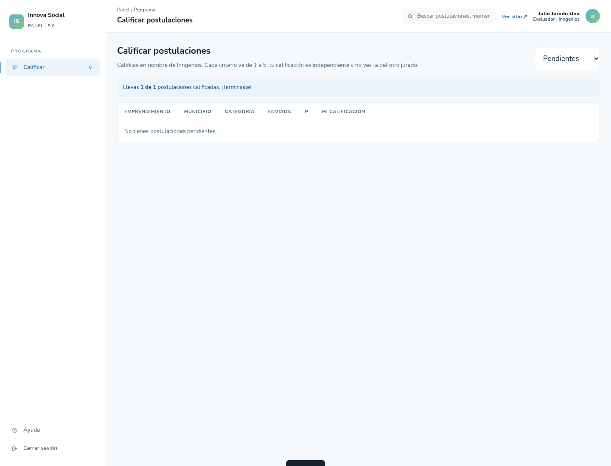
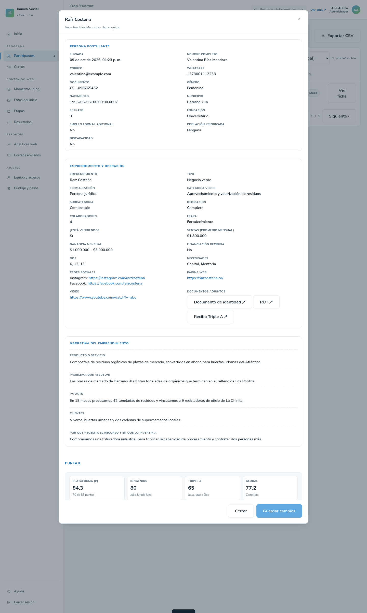
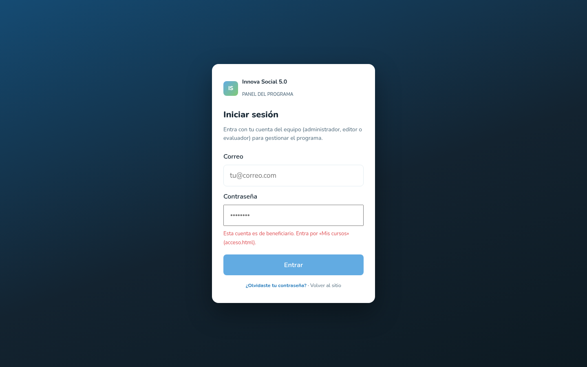
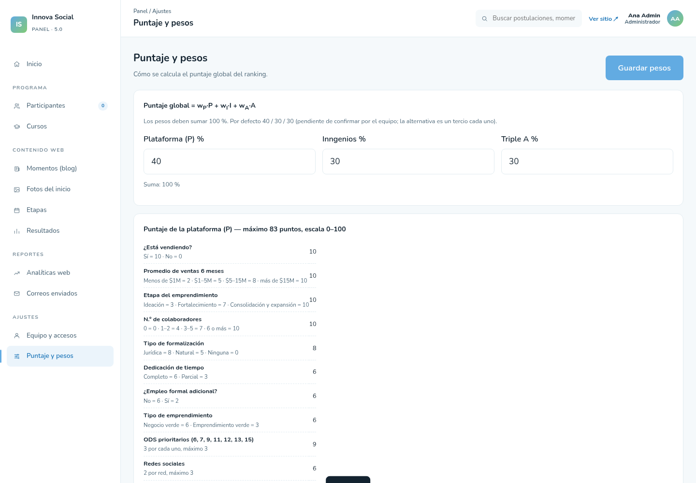

Innova Social · Plataforma 5.0
Se recorrió el ciclo completo —postular, calificar, rankear, autorizar y entrar como beneficiario— haciéndose pasar por cada tipo de usuario, sobre un Postgres real con las políticas de seguridad aplicadas.
El modelo de permisos es la parte más fuerte del proyecto y aguanta el examen. Un jurado no ve la nota del otro, ni siquiera a través del ranking; un beneficiario no alcanza las postulaciones; una cuenta recién creada no ve nada hasta que un administrador la habilita. Nada de esto depende del navegador: lo decide la base de datos, que es donde tiene que decidirse.
Lo que falta no es seguridad sino trazabilidad y reglas de juego. La plataforma hoy registra el resultado de la evaluación pero no su historia: una nota se puede reescribir sin dejar rastro del valor anterior, y nada impide que un jurado califique una postulación en la que tiene interés. En una convocatoria que reparte capital, eso es lo que se le reclama al organizador cuando alguien no queda.
Calificación global: sólida en ingeniería, incompleta como instrumento de convocatoria. Los seis hallazgos son de diseño del proceso, no defectos de código. Ninguno impide abrir; todos conviene resolverlos antes de que entre la primera postulación real.
Todas con dominio example.com, a propósito: así nunca se confunden con cuentas reales ni reciben correo de verdad.
| Persona | Correo | Rol | Jurado | Qué alcanza en el panel |
|---|---|---|---|---|
| Ana Admin | admin@example.com | Administrador | — | 12 secciones, todo el ranking |
| Elena Editora | editor@example.com | Editor | — | 8 secciones, solo contenido web y cursos |
| Julio Jurado Uno | jurado1@example.com | Evaluador | Jurado 1 | 2 secciones: Calificar y Ayuda |
| Julia Jurado Dos | jurado2@example.com | Evaluador | Jurado 2 | 2 secciones: Calificar y Ayuda |
| Beto Beneficiario | beneficiario@example.com | Beneficiario | — | Ninguna. El panel lo rechaza y lo manda a «Mis cursos» |
| Pedro Pendiente | pendiente@example.com | Pendiente | — | Ninguna, ni siquiera los cursos |
Sin cuenta, sin sesión. Llena el formulario, sube cédula, RUT y recibo, y envía. A partir de ahí no debería poder tocar nada más — y no puede.
| Intento | Esperado | Resultado |
|---|---|---|
| Enviar la postulación completa | Permitido | Permitido |
| Subir los tres adjuntos a su propia carpeta | Permitido | Permitido |
| Subir un archivo a una ruta inventada | Bloqueado | Bloqueado |
| Leer las postulaciones de los demás | Bloqueado | Bloqueado |
| Enviarse marcado como «ganador» | Bloqueado | Bloqueado |
| Volver a leer los adjuntos que subió | Bloqueado | Bloqueado |
El bloqueo de la ruta inventada es el que más vale: la política exige que el nombre del archivo sea <uuid>/cedula.pdf y nada más, así que nadie puede usar el almacenamiento del programa como disco propio.
Cada uno entra y ve exactamente dos cosas en el menú: Calificar y Ayuda. Ni participantes, ni correos, ni equipo. La pantalla le dice en nombre de quién califica y le recuerda que no verá la nota del otro.

| Intento | Esperado | Resultado |
|---|---|---|
| Jurado 1 ve la postulación y abre los adjuntos | Permitido | Permitido |
| Jurado 1 califica a nombre de su jurado | Permitido | Permitido |
| Jurado 1 califica suplantando al jurado 2 | Bloqueado | Bloqueado |
| Jurado 2 lee la nota del jurado 1 | Bloqueado | Bloqueado |
| Jurado 1 lee la nota del jurado 2 | Bloqueado | Bloqueado |
| Cada uno lee la suya | Permitido | Permitido |
El aislamiento también se sostiene en el ranking, que es donde suele filtrarse. Consultando la misma vista, cada uno recibe un resultado distinto:
| Quién consulta | Jurado 1 | Jurado 2 | Global | Estado |
|---|---|---|---|---|
| Administrador | 80,0 | 65,0 | 77,2 | Completo |
| Julio (jurado 1) | 80,0 | — | 57,7 | Parcial |
| Julia (jurado 2) | — | 65,0 | 53,2 | Parcial |
Es el único que ve las dos notas juntas, el puntaje global y quién puso cada calificación.

| Intento | Esperado | Resultado |
|---|---|---|
| Ver ambas calificaciones con su autor | Permitido | Permitido |
| Ver el ranking completo | Permitido | Permitido |
| Renombrar un jurado | Permitido | Permitido |
| Autorizar al ganador | Permitido | Permitido |
El editor gestiona el sitio y los cursos, y nada más: el menú le muestra 8 secciones y las postulaciones no están entre ellas. El beneficiario ni siquiera entra al panel — lo rechaza en la puerta y lo remite a «Mis cursos».

acceso.html.| Quién | Intento | Resultado |
|---|---|---|
| Editor | Crear una entrada del blog | Permitido |
| Editor | Leer postulaciones | Bloqueado |
| Editor | Calificar | Bloqueado |
| Beneficiario | Ver los cursos activos | Permitido |
| Beneficiario | Leer postulaciones o calificaciones | Bloqueado |
| Beneficiario | Ascenderse a administrador | Bloqueado |
| Cuenta pendiente | Ver cualquier curso | Bloqueado |
Antes, «Inngenios» y «Triple A» estaban escritos dentro del código: en dos restricciones de la base, en la vista del ranking y en la función de correos. Reusar la plataforma en otra convocatoria obligaba a tocar SQL en cuatro sitios y volver a desplegar.
Ahora los jurados son filas de una tabla. La clave (jurado_1) es estable y es lo que guardan las calificaciones; el nombre visible lo edita un administrador desde el panel. Se verificó renombrando el jurado 2 a Alcaldía de Soledad: el ranking, los encabezados de la tabla y los mensajes de «falta calificar» cambiaron solos, sin tocar una línea.
Y cada calificación guarda ahora quién la puso: nombre y correo copiados en el momento de calificar, no referenciados. Si esa persona sale del equipo y se borra su cuenta, el acta de quién calificó qué sobrevive. Lo sella la base con un disparador, no el navegador, así que un evaluador no puede falsear la autoría aunque manipule la petición.

Ninguno es un defecto de código. Los seis son decisiones de diseño del proceso que hoy están abiertas.
Un jurado cambió su calificación de 5 a 1 y lo único que quedó fue la fecha de modificación. El valor anterior se pierde.
En una convocatoria que reparte capital no hay cómo demostrar que una nota no se cambió después de hablar con alguien. Se resuelve con una tabla de historial que guarde cada versión con su autor y su fecha.
El jurado 1 puede ver y calificar una postulación cuyo correo es el suyo. No hay declaración de impedimento ni bloqueo.
Conviene al menos marcar la coincidencia de correo o documento y exigir que el jurado declare el impedimento antes de calificar.
Se puede dar de alta un tercer jurado y la tabla lo acepta, pero el ranking solo lee el primero y el segundo: la nota del tercero se descarta en silencio.
Justo el escenario de reutilización que motivó este cambio. O se generaliza el puntaje a N jurados, o la pantalla debe impedir crear un tercero.
Se insertaron cinco postulaciones seguidas con el mismo correo y la misma cédula, sin ninguna restricción.
Un script puede llenar la tabla y el almacenamiento, y el equipo tendría que depurar a mano antes de poder evaluar. Hoy solo hay topes de tamaño por campo.
La base acepta dos postulaciones del mismo emprendimiento. El panel las marca como «posible duplicada», pero no las impide.
Dos fichas del mismo emprendimiento compiten por separado en el ranking.
Con el jurado 2 desactivado, su evaluador insertó la calificación igual. Ninguna política consulta esa columna.
La opción sugiere que se puede retirar un jurado, pero no retira nada.
Un primer intento reportó que un visitante anónimo podía modificar o borrar adjuntos ajenos. Al repetirlo contando filas afectadas, resultó que afectaba cero: la operación no da error, simplemente no toca nada. Las políticas sí bloquean. No es un hallazgo.
Los seis envíos registrados están en estado de error: «The inngenios.co domain is not verified».
Sin esto no sale el aviso de nueva postulación, ni la confirmación al postulante, ni las credenciales al ganador. Requiere cargar cuatro registros DNS en GoDaddy y verificar el dominio en Resend.
La única postulación que hay en la base fue sembrada por SQL: tiene el campo de documentos vacío y ninguno de los nueve archivos del almacenamiento le pertenece.
Los nueve son huérfanos de tres pruebas borradas. Falta llenar el formulario de verdad, verla llegar al panel y abrir sus adjuntos.
Se levantó un Postgres real —PGlite, Postgres compilado a WebAssembly— sin Docker ni permisos de administrador, y se le aplicaron las 21 migraciones del repositorio desde cero. Las 21 entraron limpias, lo que confirma que la base se puede reconstruir de la nada.
Cada comprobación abre una transacción, fija el rol y el identificador de usuario igual que haría Supabase con una sesión real, ejecuta la consulta y deshace. Nada quedó escrito, y no se tocó la base de producción.
El recorrido por pantallas usa el panel real del repositorio, alimentado con lo que cada rol alcanza a ver según esas mismas políticas. Todo queda en pruebas/ y se vuelve a correr con node flow.js.
Una trampa que vale registrar: el primer intento dio 16 de 28 y parecía que las políticas bloqueaban de más. En realidad faltaban los permisos de tabla que Supabase otorga de fábrica, y todo fallaba antes de llegar a evaluarse. Una matriz de permisos mal montada miente en la dirección tranquilizadora.